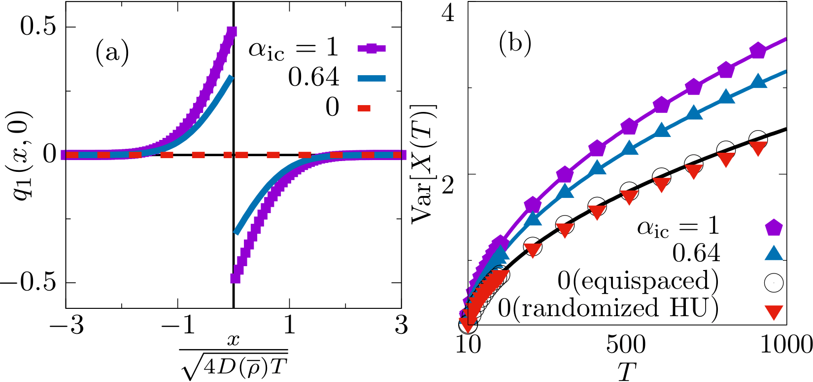

Research Interests
-
Topological defects in deformable active systems
TB, T. Desaleux, J. Ranft and E. Fodor,
arXiv:2509.19024 (2025)
-
Statistical physics of systems out of equilibrium

TB, R. L. Jack and M. E. Cates,
Phys. Rev. E 106, L062101 (2022)
-
Finite-time optimal control of complex many-body systems
J. Miranda, TB, T. Agranov and E. Fodor, in prep. (2026)